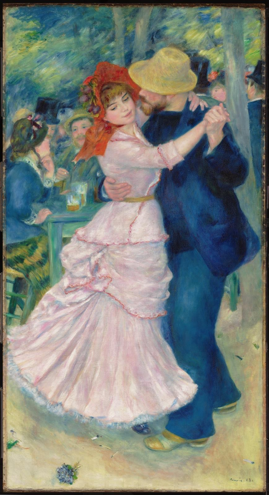

布吉瓦尔之舞 Dance at Bougival
雷诺阿 · 1883年 · 波士顿美术馆
Pierre-Auguste Renoir · 1883 · Museum of Fine Arts, Boston
图片：Wikimedia Commons，公有领域 / Image: Wikimedia Commons, public domain

发现 · Discover
真人大小 Life-size
这幅画将近两米高，画中的一对舞者几乎和真人一样大。
At almost two metres tall, the painting shows the dancing couple almost life-size.
红色软帽 The red bonnet
女子戴着一顶装饰着紫色果子的红色软帽。雷诺阿的父母是裁缝，他很喜欢画当时时装的细节。
The woman wears a red bonnet trimmed with purple fruits. The son of a tailor and a dressmaker, Renoir loved painting the details of fashion.
转开的目光 A turned gaze
跳舞的时候，她把目光从舞伴身上移开了。
As they dance, she turns her gaze away from her partner.
塞纳河边的周末 A weekend by the Seine
布吉瓦尔是巴黎郊外塞纳河边很受欢迎的休闲地，人们来这里的露天咖啡馆跳舞、消磨下午。
Bougival was a popular place for leisure on the Seine outside Paris, where people came to dance and while away the afternoon at open-air cafés.
三对舞者 Three dancing couples
1883年春天，雷诺阿画了三幅真人大小的跳舞情侣，这是其中一幅。另外两幅在巴黎奥赛博物馆。
In spring 1883, Renoir painted three life-size dancing couples. This is one; the other two are in the Musée d'Orsay, Paris.
小说里的插图 An illustration for a story
雷诺阿的朋友保罗·洛特写了一篇短篇小说，雷诺阿为它画了这幅舞蹈的素描，作为插图。
Renoir's friend Paul Lhote wrote a short story, and Renoir made a drawing of this dance to illustrate it.
故事 · The story
ACT I 第一幕 · 塞纳河边的下午 An afternoon by the Seine
19世纪80年代，巴黎人喜欢在周末去城外的塞纳河边。布吉瓦尔的露天咖啡馆里，人们喝酒、聊天、跳舞。
In the 1880s, Parisians loved weekends by the Seine outside the city. At the open-air cafés of Bougival, people drank, talked and danced.
1883年 · 波士顿美术馆 / 1883 · Museum of Fine Arts, Boston
ACT II 第二幕 · 三支舞 Three dances
1883年春天，雷诺阿为画商杜兰-鲁埃画了三幅真人大小的跳舞情侣：一幅在城市，一幅在乡村，还有这一幅在布吉瓦尔。画中人物是谁，至今仍有争论。
In spring 1883, Renoir painted three life-size dancing couples for the dealer Durand-Ruel: one in the city, one in the country, and this one at Bougival. Who posed for them is still debated.
1883年 · 波士顿美术馆 / 1883 · Museum of Fine Arts, Boston
ACT III 第三幕 · 来到波士顿 To Boston
1937年，波士顿美术馆买下了这幅画。今天，它是那里最受喜爱的作品之一。
In 1937, the Museum of Fine Arts, Boston bought this painting. Today it is one of the museum's best-loved works.
1883年 · 波士顿美术馆 / 1883 · Museum of Fine Arts, Boston
一个夏天的下午，一支舞。 One summer afternoon, one dance.
作品档案 · Artwork record
| 画家（生卒年） · Artist (dates) | 皮埃尔-奥古斯特·雷诺阿（1841–1919） / Pierre-Auguste Renoir (1841–1919) |
|---|---|
| 画名 · Title | 布吉瓦尔之舞 / Dance at Bougival (Danse à Bougival) |
| 年份 · Date | 1883年 / 1883 |
| 材质 · Medium | 布面油画 / Oil on canvas |
| 尺寸 · Dimensions | 181.9 × 98.1 cm |
| 收藏地 · Collection | 波士顿美术馆（1937年购入；编号 37.375） / Museum of Fine Arts, Boston (acquired 1937; 37.375) |
关于画家 · About the artist
皮埃尔-奥古斯特·雷诺阿（1841–1919），法国画家。他和莫奈在学画时就是好友，是印象派的核心人物之一。19世纪80年代，他开始离开印象派，转向古典艺术。
Pierre-Auguste Renoir (1841–1919) was a French painter. He and Monet became friends as students, and he was one of the leading Impressionists. In the 1880s he began to move away from Impressionism towards classical art.
更多雷诺阿的画 · More by Pierre-Auguste Renoir